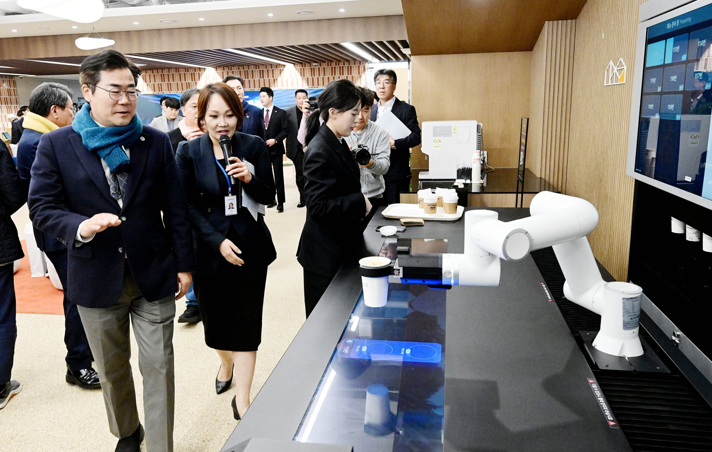

남동산단 복합문화센터 「산다락」 개관, 58억원 들인 1408㎡
평일 오전 9시~오후 9시 운영, 시범 강좌 6개로 출발
AI경제저널=김갑봉 기자 | 인천시(시장 박찬대)가 남동국가산업단지 노동자와 주민이 쓰는 복합문화센터 「산다락」을 열었다고 12일 밝혔다. 시는 이날 남동산단케이원 지식산업센터 지하 1층에서 개관식과 문화선도산단 비전선포식을 열었다. 기업인과 노동자, 주민 등 100여명이 참석했다.

카페와 스튜디오 세 곳, 커뮤니티룸
「산다락」은 산업단지의 「산단」과 「다락방」을 합친 이름이다. 시는 사업비 58억원을 들여 1408㎡ 규모로 지었다. 주소는 남동구 비류대로 622다.
시설은 다섯이다. 다목적 카페에서는 이날 무인 로봇 바리스타가 음료 제조를 시연했다. 동호회·스터디용 커뮤니티룸도 있다.
스튜디오는 세 곳이다. 스포츠스튜디오에서 요가와 K팝 댄스를, 뮤직스튜디오에서 보컬·드럼·기타를, 아트스튜디오에서 공예·미술을 배운다.
11월부터 요가, K팝 댄스, 어반스케치, 프랑스자수 등 시범 강좌 6개로 운영을 시작한다. 시는 정규 프로그램을 차차 늘린다는 계획이다.
시 자료의 시설 개요를 보면 운영시간은 평일 오전 9시부터 오후 9시까지이고 공휴일은 뺀다. 관리는 인천테크노파크가 위탁받아 맡는다.
박찬대 인천시장은 "지난 40년간 인천 경제를 받쳐온 남동국가산업단지가 복합문화센터 '산다락' 개관을 계기로 산업과 문화, 일과 삶이 어우러진 문화혁신 거점으로 거듭날 것"이라고 말했다.
2029년까지 문화선도산단 631억원
시는 이날 남동 문화선도산단 조성 사업 5대 전략 「남동 WINGS」도 내놨다. 2029년까지 631억원을 들이는 사업이다.
다섯 전략은 문화가 있는 날(W), 랜드마크 「산단콤마」와 공간재생(I), 문화콘텐츠 균형발전(N)이다. 「이이륙(226) 문화거리」와 공장 새단장(G), 청년디자인리빙랩과 문화곳간 플랫폼(S)도 들었다.
문화선도산단은 국토교통부·산업통상자원부·문화체육관광부가 공모로 고르는 사업이다. 세 부처는 지난 7월 남동산단을 2026년도 대상지로 골랐다. 시는 지난 10월 30일 신일기 인천가톨릭대 교수를 총괄기획가로 위촉했다.
사업비는 세 번 바뀌었다. 시가 3월 밝힌 공모 신청 총사업비는 653억원이었다. 7월 선정 발표에서는 587억원(국비 327억원, 시비 196억원, 구비 60억원, 민간 4억원)이었다. 10월에는 631억원이 됐다.
「산다락」이 남동산단 노동자에게 말하는 것
시 자료와 연구에서 짚을 것은 셋이다.
같은 건물 지하 1층 센터 계획은 4년 전에 나왔다. 시는 2022년 9월 산업통상자원부 산업단지 환경조성 공모에 뽑혀 국비 37억원을 확보했다. 그때 시는 국비를 포함해 97억7000만원으로 복합문화센터와 원인재역 부근 거리를 2025년까지 고친다고 밝혔다.
센터 자리는 케이원(K1) 지식산업센터 지하 1층, 연면적은 968㎡로 잡았다. 이번에 밝힌 조성면적은 1408㎡이고, 문은 올해 11월에 열었다.
2022년 계획에는 청년 문화공간과 함께 미용실·코인세탁소·여성휴게실 같은 노동자 편의시설이 들어 있었다. 이번 개관 발표의 시설 목록은 카페와 스튜디오 셋, 커뮤니티룸이고 미용실·코인세탁소·여성휴게실은 없다.
한국산업단지공단 산업입지연구소 연구진은 2021년 한국경제지리학회지 논문에서 산업단지별 청년 분포를 분석했다. 근무환경, 혁신환경, 배후지역 편의시설(어메니티)이 좋은 산업단지가 청년을 끄는 힘이 큰 유형에 들었다. 연구진은 이 유형의 우선 과제로 교통 접근성과 일자리를 꼽았다.
시는 남동산단 노동자를 약 8만명, 인근 주민을 약 26만명으로 잡았다. 2030년까지 해마다 8만명 넘게 문화 프로그램에 참여하게 한다는 목표를 7월 내놨다. 지난 4일 문을 연 검단 근로자복합문화센터는 213억원, 연면적 4495㎡에 시범 강좌 19개로 출발했다.
산다락 시설과 수강 신청 안내는 산다락 누리집(sandarak.kr)과 센터(032-260-0209)에서 한다.
참고문헌
- "산업단지 청년유인력 유형별 특성 분석: 청년유인력 종합지수를 중심으로", Sa Hoseok·Woo Hansoun(한국산업단지공단 산업입지연구소), 「한국경제지리학회지」 24권 2호 181~200쪽, 2021, https://www.koreascience.kr/article/JAKO202120763324181.page
- "인천시, 산단 복합문화센터'산다락'개관 '문화선도산단'도약 선포", 인천광역시 산업입지과, 2026.11.12, https://www.incheon.go.kr/IC010205/view?repSeq=DOM_0000000015956274
- "인천시, 남동 문화선도산단 총괄기획가 위촉…사업 추진 본격화", 인천광역시 산업입지과, 2026.10.30, https://www.incheon.go.kr/IC010205/view?repSeq=DOM_0000000015865078
- "인천시, 남동산단 문화선도산단’추진, 653억 투입 산업단지 혁신", 인천광역시 산업입지과, 2026.03.11, https://www.incheon.go.kr/IC010205/view?repSeq=DOM_0000000014318322
- "인천 남동산단, 문화·청년 날개 달았다", 인천광역시 산업입지과, 2026.07.11, https://www.incheon.go.kr/IC010205/view?repSeq=DOM_0000000015129924
- "인천시, 남동산단 복합문화센터 구축사업 공모 선정", 인천광역시 산업진흥과, 2022.09.28, https://www.incheon.go.kr/IC010205/view?repSeq=DOM_0000000005599913
- "인천시,'검단 근로자복합문화센터'개관, 서북부 문화·복지 거점 마련", 인천광역시 노동정책과, 2026.11.04, https://www.incheon.go.kr/IC010205/view?repSeq=DOM_0000000015896307
[사진 출처]
- [사진1] 인천시 인천인터넷방송 포토시정 「인천산단 복합문화센터 '산다락' 개관식」(2026.11.12) https://www.incheon.go.kr/intv/TV010201/3094638
관련기사
- 부평·주안 국가산단 재생에 341억원…주차 493면 확충
- 12월부터 노동감독권 지자체로, 인천시 노동국 내년 1월
- 청년 많이 일하는 100곳, 장시간 노동·공짜 야근 감독 받는다
- 인천도시철도 무임승차 4년 새 78.7% 증가…못 받은 운임 533억원
저작권자 © AI경제저널 무단전재 및 재배포, AI학습 및 활용 금지